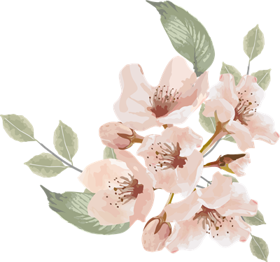

MESSAGE
学長メッセージ
「わからない」を楽しめる人に。
大学での学びは、答えを覚えることではなく、問いを立てることから始まります。本学では教員と学生の距離が近く、ひとりひとりの「なぜ」に向き合う時間を大切にしてきました。安心して挑戦できる場所で、あなたらしい学びを見つけてください。
学長 ○○ ○○
PHILOSOPHY
教育の理念
-
{{ p.k }}
{{ p.title }}
{{ p.text }}

FEATURES
澄花の4つの特色
-
POINT {{ f.no }}
{{ f.title }}
{{ f.text }}

HISTORY
※年号はサンプルです
沿革
- {{ h.y }} {{ h.t }}
CAMPUS
キャンパス紹介
- {{ f.name }} {{ f.text }}